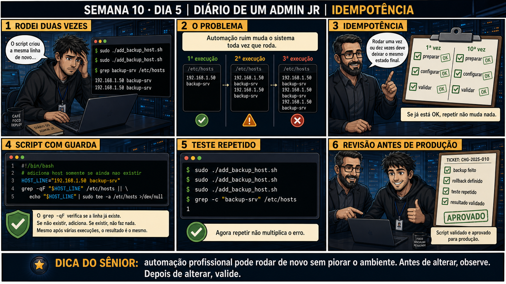

DIARIO DE UM ADMIN JR. | FASE 1 — LINUX, DO BÁSICO AO AVANÇADO
🔗 Conecta com toda a Semana 10: backup verificado, healthcheck confiável, cron
sem pegadinha de PATH, segredos protegidos — hoje fecha com a última peça de um script de produção real:
rodar duas vezes não pode ser pior que rodar uma vez só.
🔓 Privilégio de hoje: escrever automação idempotente, segura pra rodar quantas
vezes for preciso. Você ganha o hábito de checar se uma mudança já foi aplicada antes de aplicá-la de
novo.
Semana 10 · Dia 5 | Nível Júnior
Idempotência: Rodar de Novo Não Pode Multiplicar o Erro
automação profissional pode rodar de novo sem piorar o ambiente
ANTES DE ALTERAR, OBSERVE. DEPOIS DE ALTERAR, VALIDE.

1. O chamado
Você roda add_backup_host.sh duas vezes por engano (clique duplo, execução
manual repetida). O script adiciona uma linha em /etc/hosts toda vez que roda — agora existem
duas linhas idênticas, e na terceira execução vão ser três.
💡 Passa o mouse nas palavras destacadas pra ver uma dica rápida — clica se quiser a explicação completa com analogia.
2. O sênior te conta
Semana passada, outro ticket
Um cron reagendou sozinho depois de uma falha de rede no meio da execução, e rodou
add_backup_host.sh mais uma vez sem ninguém perceber. O script não tinha guarda nenhuma — só
adicionava a linha em /etc/hosts direto. Resultado: três linhas idênticas acumuladas ao
longo de duas semanas, e um admin gastou meia hora tentando entender por que a resolução de nome do
backup-srv às vezes demorava mais que o normal (o sistema lia a primeira ocorrência, mas o
arquivo inchado com duplicatas virou sinal de que algo automatizado estava fora de controle). A correção
não foi vigiar o cron pra não rodar duas vezes — foi tornar o próprio script seguro pra rodar quantas
vezes fosse, checando antes de agir. O ponto que fica: automação de verdade não confia que vai rodar só
uma vez — ela é escrita pra não se importar quantas vezes roda.
3. Decodificador de conceitos
Clica em qualquer termo pra ver a definição completa e uma analogia do dia a dia:
4. Ferramentas e leitura da evidência
Elemento
O que observar e por que importa
grep -qF "$HOST_LINE" /etc/hosts
Verifica se a linha exata já existe — -q silencioso, -F busca texto literal.
... || echo "$HOST_LINE" | sudo tee -a /etc/hosts
Só adiciona se o grep NÃO encontrou (comando falhou = linha não existe).
grep -c "backup-srv" /etc/hosts
Conta ocorrências — deve ser sempre 1, não importa quantas vezes o script rodou.
--- sem guarda, duas execuções ---
$ sudo ./add_backup_host.sh
$ sudo ./add_backup_host.sh
$ grep backup-srv /etc/hosts
192.168.1.50 backup-srv
192.168.1.50 backup-srv # duplicado!
--- com guarda de idempotência ---
HOST_LINE="192.168.1.50 backup-srv"
grep -qF "$HOST_LINE" /etc/hosts || \
echo "$HOST_LINE" | sudo tee -a /etc/hosts >/dev/null
$ sudo ./add_backup_host.sh
$ sudo ./add_backup_host.sh
$ sudo ./add_backup_host.sh
$ grep -c "backup-srv" /etc/hosts
1 # sempre 1, não importa quantas vezes rodou
5. Laboratório guiado — marca conforme for testando
Segurança: execute os testes apenas em VM descartável e confirme nomes de discos, hosts e arquivos antes de cada comando.
Ação: escreva um script simples SEM guarda que adiciona uma linha a um arquivo de teste, e rode duas vezes.
Resultado esperado: mesmo rodando duas vezes, só uma linha no arquivo.
Cilada comum: escrever a guarda checando a coisa errada (por exemplo, só se o arquivo existe, não se a linha específica existe) — isso passa no teste ingênuo mas não garante idempotência real.
Ação: rode o script corrigido 5 vezes seguidas e confirme com grep -c que o resultado continua sendo 1.
$ for i in 1 2 3 4 5; do ./add_linha2.sh; done
$ grep -c "backup-srv" teste_hosts2.txt
1
Resultado esperado: contagem sempre 1, confirmando idempotência real.
🧑🏫 Aqui entra o Mentor (em breve): se um script parecer idempotente mas ainda causar efeitos colaterais em execuções repetidas, este é o ponto onde o chat com o Sênior-IA vai ajudar a identificar a causa.
Ação: revise todos os scripts que você escreveu nas Semanas 9 e 10, identificando quais são idempotentes e quais não são.
Resultado esperado: lista pessoal de scripts revisados, com nota sobre idempotência de cada um.
Ação: documente o fechamento da Semana 10 e do bloco de automação inteiro: scripts escritos, princípios aplicados.
Resultado esperado: registro completo reproduzindo o painel 6 da prancha de hoje.
6. Antes de ver as opções — tenta responder
🧠 Recall ativo: o que significa um script ser idempotente?
Idempotência significa
que rodar o script UMA vez ou DEZ vezes deixa o sistema exatamente no mesmo estado final — a
guarda de verificação (checar
se algo já existe antes de adicionar) é o que garante isso.
QUESTÃO 1 de 3
7. Questão comentada — clica numa alternativa
Seu script adiciona uma linha em /etc/hosts toda vez que roda, sem checar se ela
já existe. Qual é a correção correta pra torná-lo seguro pra rodar múltiplas vezes?
💡 Analogia do Sênior para Fixar: Idempotência é o botão do elevador: não importa se você aperta uma ou cinquenta vezes, o elevador vai para o mesmo andar sem estragar o prédio.
QUESTÃO 2 de 3 — cenário de erro real
7.1 O script rodou três vezes seguidas e grep -c mostra 1 — o que isso comprova sobre o script?
Depois de rodar sudo ./add_backup_host.sh três vezes seguidas, grep -c "backup-srv"
/etc/hosts continua mostrando 1.
O que esse resultado comprova sobre a qualidade do script?
💡 Analogia do Sênior para Fixar: Um script idempotente verifica se o usuário ou arquivo já existe antes de tentar criar de novo: evita mensagens de erro e duplicações desnecessárias no sistema.
QUESTÃO 3 de 3 — detalhe que confunde todo iniciante
7.2 "Todo script que usa if pra checar antes de agir já é automaticamente idempotente?"
Um colega assume que basta ter algum if no script pra ele ser considerado idempotente,
sem verificar o que exatamente está sendo checado.
Essa suposição está correta?
💡 Analogia do Sênior para Fixar: A revisão de código com foco em idempotência é o teste de robustez: garante que rodar o script dez vezes seguidas produzirá sempre o mesmo estado final limpo.
8. Procedimento profissional
Identifique o efeito que sua ação produz (linha adicionada, arquivo criado, serviço iniciado).
Escreva uma guarda que checa exatamente se esse efeito já existe.
Só execute a ação se a guarda confirmar que ainda não foi feita.
Teste rodando o script múltiplas vezes seguidas, confirmando o mesmo resultado final.
Documente a propriedade de idempotência como parte da revisão do script antes de produção.
Prevenção
Padronize um checklist de revisão pré-produção que exige, pra qualquer script novo, uma
pergunta explícita: "o que acontece se isso rodar duas vezes seguidas?" — se a resposta não for "nada
muda", o script não está pronto. Combinado com o template de set -euo pipefail + PATH
explícito das aulas anteriores, fecha as três camadas de um script realmente pronto pra produção.
9. Validação e encerramento
O script tem uma guarda que checa exatamente o efeito antes de agir.
Rodar o script múltiplas vezes produz sempre o mesmo resultado final.
O teste de idempotência foi feito de verdade (rodar várias vezes), não só assumido.
O script está documentado e aprovado como pronto pra produção.
Rollback e limites
Uma guarda de idempotência não é destrutiva — não existe rollback necessário. O
risco real evitado é justamente scripts que, rodados por engano mais de uma vez, acumulam efeitos
indesejados (linhas duplicadas, usuários duplicados, configurações conflitantes).
💡 Sobre repetição espaçada: "rodar de novo não pode piorar" fecha a Semana
10 e toda a Fase 1 de automação — conectando com backup verificado (Dia 1), healthcheck confiável (Dia 2),
cron correto (Dia 3) e segredo protegido (Dia 4). O Anki vai conectar a semana inteira.
10. Resposta final
Alternativa correta: B. Nesta aula, a decisão correta foi adicionar
uma guarda com grep -qF pra verificar se a linha já existe antes de adicionar. O ponto central do caso
é este: automação profissional pode rodar de novo sem piorar o ambiente.
🔓 O que você desbloqueou hoje
Capacidade de escrever scripts idempotentes, prontos pra produção real —
fechando a Semana 10 e o bloco completo de automação em bash da Fase 1. Semana 11 começa o clímax avançado
da Fase 1: boot, GRUB e recuperação de sistema.